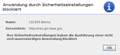
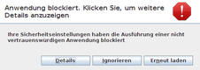
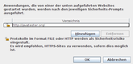

Oracle Java
Dieser Artikel wurde für die folgenden Ubuntu-Versionen getestet:
Ubuntu 14.04 Trusty Tahr
Zum Verständnis dieses Artikels sind folgende Seiten hilfreich:
Oracle Java (früher Sun Java), auch als Java SE (Standard Edition) bezeichnet, muss manuell – unter Umgehung der Paketverwaltung von Ubuntu – installiert werden. Der große Nachteil dabei ist, dass man über Sicherheitsupdates nicht automatisch informiert wird und diese zeitnah installieren kann – wenn ein Update erscheint, muss man selbst aktiv werden. Eine Benachrichtigung, dass ein Update vorliegt, erfolgt (unter Linux) ebenfalls nicht.
Der Grund: im August 2011 wurde von Oracle die bisherige "DLJ" (Operating System Distributor License for Java) aufgekündigt, die es Canonical und anderen Distributoren erlaubte, Installationspakete von Java zu erstellen und über die offiziellen Paketquellen zu verteilen. Erschwerend kommt hinzu, dass Oracle selbst nur Paketdateien im RPM-Format zur Verfügung stellt, aber nicht die unter Ubuntu notwendigen DEB-Pakete. Daher ist die manuelle Installation die einzige Möglichkeit, Oracle Java unter Ubuntu zu installieren.
Versionen¶
Von Oracle Java existieren mehrere Hauptversionen:
| Oracle-Java-Versionen | |
| Version | Beschreibung |
| Java 9 | nächste Version, noch in der Entwicklung |
| Java 8 | derzeit für Endanwender empfohlene Version |
| Java 7 | Entwicklung eingestellt, keine Sicherheitsaktualisierungen mehr! |
| Java 6 | Entwicklung eingestellt, keine Sicherheitsaktualisierungen mehr! |
In der Praxis hängt es vom konkreten Einsatzzweck ab, für welche Version man sich entscheiden sollte. Manche Programme setzen zwingend eine bestimmte Version voraus oder sind nur mit dieser getestet. Darüber hinaus ist der Unterschied zwischen dem Java Runtime Environment (JRE) und dem Java Development Kit (JDK) wichtig, denn man sollte sich für eine Variante entscheiden. Für reine Anwender reicht das JRE aus, während Java-Entwickler das JDK benötigen.
Aktualität prüfen¶
Um schnell zu überprüfen, ob für Oracle Java ein Aktualisierungsbedarf vorliegt, sind folgende Befehle [1] nützlich:
Version:
java -version
Hinweis:
Dieser Befehl setzt ein korrekt konfiguriertes Alternativen-System [2] voraus.
Beispiel:
java version "1.7.0_51" Java(TM) SE Runtime Environment (build 1.7.0_51-b13) Java HotSpot(TM) Client VM (build 24.51-b03, mixed mode)
Diese Ausgabe vergleicht man mit der offiziellen Homepage
 .
.
Betriebssystem-Architektur (32-/64-Bit):
lscpu | grep Archite
Beispiel:
Architecture: x86_64 (= 64-Bit; i686 bei 32-bit-Systemen)
Installation¶
Hinweis:
Im Vorfeld einer Installation sollten bereits installierte ältere Versionen von Oracle Java zuerst entfernt werden. Details sind in den jeweiligen Unterartikeln zu finden.
Über die folgende Liste gelangt man direkt zum jeweiligen Artikel mit Hinweisen zur gewünschten Variante:
Alternativ zu den Anleitungen für die verschiedenen Java-Versionen kann man das Skript make-jpkg nutzen, um sich eigene Installationspakete zu erstellen. Diese Pakete werden dann entweder direkt installiert oder können über eine lokale Paketquelle im lokalen Netzwerk verteilt werden.
Eine andere Möglichkeit ist der Einsatz eines (sich noch in der Testphase befindlichen) Installationsskript-Generators , der für das JRE von Java 8 geeignet ist. Hiermit kann man sich online ein Shellskript erstellen, das man herunterladen kann und das anschließend die unten genannten Einzelschritte automatisiert durchführt. Hierbei kann man die Rechnerarchitektur sowie weitere Optionen auswählen. Die jeweilige Archivdatei wird beim Ausführen des Skripts direkt von der offiziellen Downloadseite von Oracle heruntergeladen.
Programmstarter anlegen¶
Üblicherweise startet man ein Java-Programm über die Kommandozeile. Ein Beispiel:
java -jar /PFAD/ZU/foobar.jar
Um Programme mit (oder von) Oracle Java über einen Programmstarter [3] oder einen Dateimanager aufrufen zu können, muss man sich .desktop-Dateien anlegen, entweder im Ordner ~/.local/share/applications/ (pro Benutzer) und /usr/share/applications/ (systemweit, nur mit Root-Rechten [4] möglich). Hier ein Beispiel für Oracle Java 8 JRE, dass man z.B. als oracle_java8-jre.desktop speichern kann [5]:
1 2 3 4 5 6 7 8 9 | [Desktop Entry] Name=Oracle Java 8 Runtime Comment=Oracle Java 8 Runtime Exec=/opt/Oracle_Java/jre1.8.0_VERSION/bin/java -jar %f Terminal=false Type=Application Icon=/opt/Oracle_Java/jre1.8.0_VERSION/plugin/desktop/sun_java.png MimeType=application/x-java-archive;application/java-archive;application/x-jar; NoDisplay=true |
Die Zeilen Exec=... und Icon=... bitte entsprechend anpassen. Über MimeType= werden Verknüpfungen zum Programmstart von Java-Dateien (.jar) erzeugt (siehe auch MIME-Typ). Der Programmstarter erscheint nicht im Anwendungsmenü (NoDisplay=true).
Der Vollständigkeit halber sei noch erklärt, wie weitere Programmstarter nach dem gleichen Muster eingerichtet werden können.
Kontrollpanel¶
Start via Kommandozeile im Terminal (Oracle Java 7):
/opt/Oracle_Java/jre1.7.0_VERSION/bin/ControlPanel
Ein Beispiel für das Java 7-Kontrollpanel - speichern als oracle_java7-controlpanel.desktop.
1 2 3 4 5 6 7 8 | [Desktop Entry] Name=Oracle Java 7 Kontrollpanel Comment=Oracle Java 7 Kontrollpanel Exec=/opt/Oracle_Java/jre1.7.0_VERSION/bin/ControlPanel Terminal=false Type=Application Icon=/opt/Oracle_Java/jre1.7.0_VERSION/plugin/desktop/sun_java.png Categories=Settings; |
Java Policy-Tool¶
Start via Kommandozeile im Terminal (Oracle Java 7):
/opt/Oracle_Java/jre1.7.0_VERSION/bin/policytool
Speichern als oracle_java7-policytool.desktop:
1 2 3 4 5 6 7 8 | [Desktop Entry] Name=Oracle Java 7 Policytool Comment=Oracle Java 7 Policytool Exec=/opt/Oracle_Java/jre1.7.0_VERSION/bin/policytool Terminal=false Type=Application Icon=/opt/Oracle_Java/jre1.7.0_VERSION/plugin/desktop/sun_java.png Categories=Settings |
Java Webstart¶
Speichern als oracle_java7-webstart.desktop (Oracle Java 7):
1 2 3 4 5 6 7 8 9 | [Desktop Entry] Name=Oracle Java 7 Webstart Comment=Oracle Java 7 Webstart Exec=/opt/Oracle_Java/jre1.7.0_VERSION/bin/javaws %f Terminal=false Type=Application Icon=/opt/Oracle_Java/jre1.7.0_VERSION/plugin/desktop/sun_java.png MimeType=application/x-jnlp; NoDisplay=true |
Problembehebung¶
Sicherheitsparanoia bei Java-Applets¶
Bedingt durch unzählige Sicherheitslücken im Java Browser-Plugin sowie verspätet nachgereichten bzw. fehlenden Sicherheitsupdates hat sich Oracle im Jahr 2013 entschieden, vor der Anzeige von Java-Applets grundsätzlich eine Sicherheitswarnung einzublenden.
Ab der Version Java 7 Update 51 reicht das nach Meinung von Oracle nicht mehr aus: Die Ausführung nicht signierter Java-Applets wird nun prinzipiell verweigert (Abb. 2 und 3). Statt des Java-Applets sieht man nur eine Fehlermeldung, selbst wenn man der Ausführung explizit zugestimmt hat.
 |
| Sicherheitswarnung |
|  |
| Java Applets sind viel zu gefährlich |
|  |
| Bitte verzichten Sie auf Java Applets! |
|  |
| Ausnahmeliste anlegen |
Allerdings darf der Anwender eine Ausnahmeliste anlegen (Abb. 4). Dazu das Kontrollpanel starten und auf der Registerkarte "Sicherheit" die Liste der ausgenommenen Websites über "Sitelist bearbeiten". Beispiel:
http://javatester.org
Diese Ausnahmen werden in der Datei ~/.java/deployment/security/exception.sites gespeichert.
Welche URL (inkl. http:// bzw. https://!) der Benutzer hinzuzufügen hat, darf dieser selbst herausfinden. Als erster Anhaltspunkt kann die auf den Domainnamen verkürzte URL der betroffenen Internetseite dienen, die das blockierte Java Applet enthält.
Wer nun glaubt, mit signierten Applets wäre das nicht passiert, ist auf dem Holzweg. Während ein nicht signiertes Applet in eine Sandbox gesperrt wird, wo es vom Rest des Systems abgeschottet läuft, laufen signierte Applets außerhalb der Sandbox und können so – den schlechtesten Fall angenommen – wirklich gefährlich werden. Da eine Signierung kostenpflichtig ist, ist es nur eine Frage der Zeit (und des Gelds), bis signierte Malware auftauchen wird. Zusammengefasst: die meisten unsignierten Applets dürften harmlos sein (falls man sie zum Funktionieren überreden kann und der Quelle vertraut). Bei signierten Applets sollte man zweimal nachdenken, bevor man die Ausführung gestattet.
Sicherheitsebene¶
Entwickler, die mit lokal gespeicherten Java-Applets experimentieren möchte, können dies trotz ausdrücklicher Bestätigung der Sicherheitswarnung erst, wenn die Sicherheitsebene über das Java Control Panel von "hoch" auf "mittel" gesetzt wird. Dazu das Kontrollpanel starten und auf der Registerkarte "Sicherheit" die Sicherheitsebene umstellen und anwenden. Hilft das nicht weiter, bleibt nur die im vorherigen Abschnitt beschriebene Ergänzung der Ausnahmeliste übrig. Als Protokoll bitte file:// verwenden.
Xubuntu¶
Bei Xubuntu 11.10 und 12.04 fehlt das Verzeichnis /usr/lib/mozilla/plugins/. Dadurch kommt es zu Problemen bei der Aktivierung des Browser-Plugins libnpjp2.so über das Alternativen-System. Abhilfe schafft das Anlegen des Ordners:
sudo mkdir -p /usr/lib/mozilla/plugins
Anschließend kann man die Befehls-Sequenzen mit sudo update-alternatives ... zur Konfiguration des Alternativen-Systems ohne Fehlermeldung ausführen.
Links¶
 Übersichtsartikel
ÜbersichtsartikelExtern¶
Linux ohne Java?
heise OpenSource, 09/2011Oracle Critical Patch Updates and Security Alerts
 - gilt für alle Produkte, nicht nur Java. Auch als RSS-Feed verfügbar.
- gilt für alle Produkte, nicht nur Java. Auch als RSS-Feed verfügbar.Anleitung im franz. Ubuntu-Wiki
- Erstellt mit Inyoka
-
 2004 – 2017 ubuntuusers.de • Einige Rechte vorbehalten
2004 – 2017 ubuntuusers.de • Einige Rechte vorbehalten
Lizenz • Kontakt • Datenschutz • Impressum • Serverstatus -
Serverhousing gespendet von